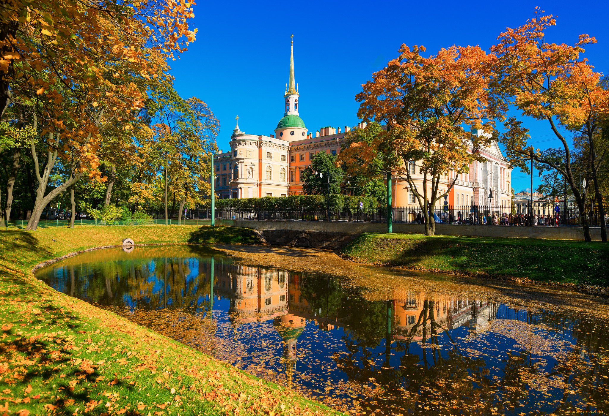
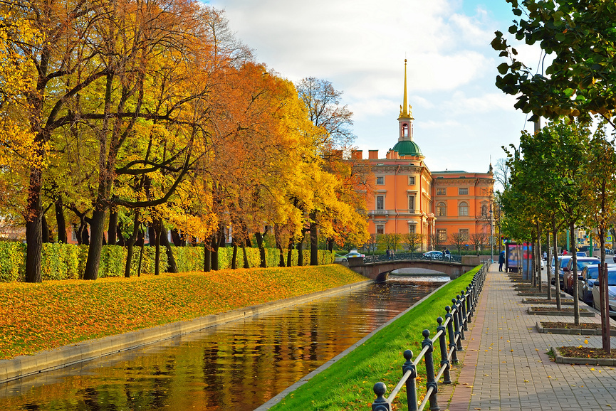
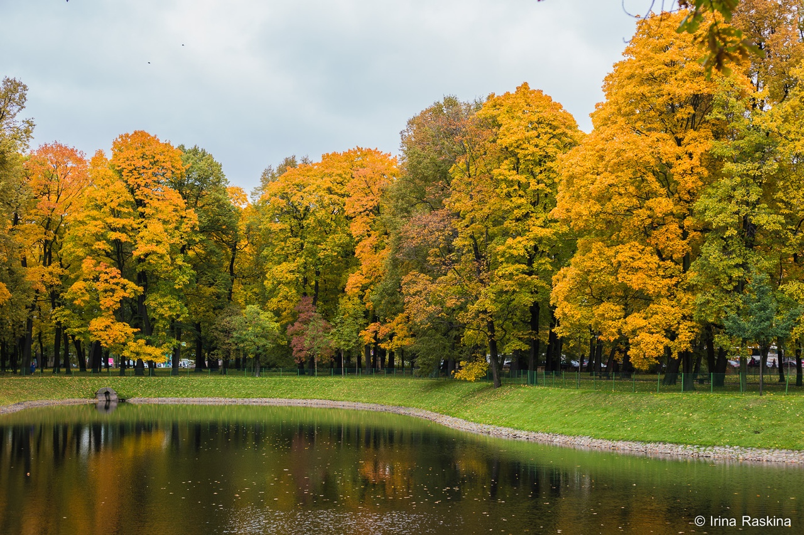

Осень в Петербурге
Парки Петербурга для осенних прогулок
Летний сад
Михайловский сад
  
Нижний парк Петродворца
Что обязательно взять с собой в парк
Фотоаппарат или телефон с камерой
Термос с горячим чаем
Хорошее настроение)
Летний сад
Михайловский сад
Нижний парк Петродворца